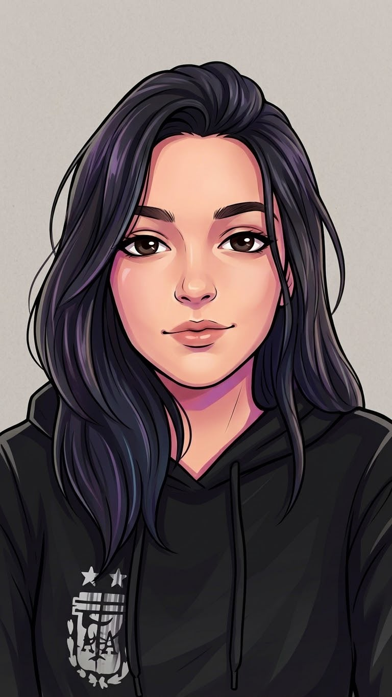

Sobre nosotros
Somos el equipo de desarrollo “ITERA”. Nuestras cuatro participantes han sido formadas en la secundaria “E.P.E.T N°20” de Neuquén
Capital, con un título en “Técnico en Programación”. Utilizamos la metodología “SCRUM” (ver en glosario) para construir software funcional y de calidad,
según la solicitud del cliente.
Esta página web en específico fue pensada y desarrollada con el objetivo de difundir conocimientos
fundamentales sobre la gestión de la calidad del software, los procesos de desarrollo y las metodologías más relevantes en la industria, proporcionando
un recurso accesible y comprensible para estudiantes, profesionales en formación y cualquier persona interesada en comprender cómo se construye
software de calidad y cuáles son los enfoques metodológicos más utilizados.
Siguiendo los roles de esta metodología, la división que hemos definido para la instancia de producción de un sistema es la siguiente:
Lencina Sofía
Programadora
ITERA
Medel Guadalupe
Diseñadora
ITERADíaz Ailín
Tester
ITERARizzuto Ámbar
SCRUM master
ITERA